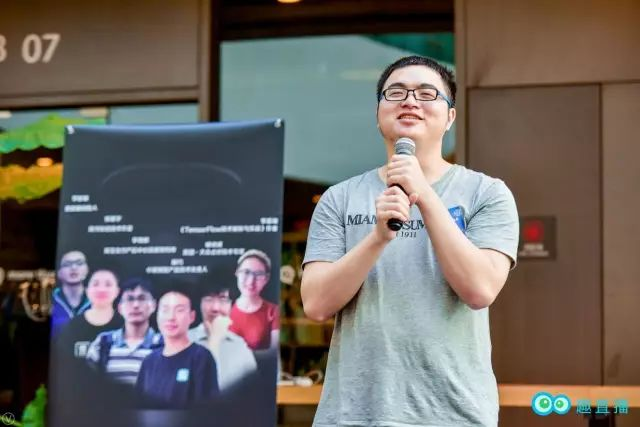
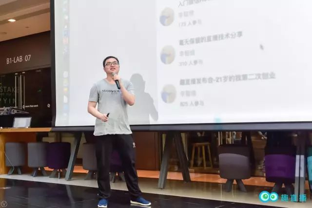
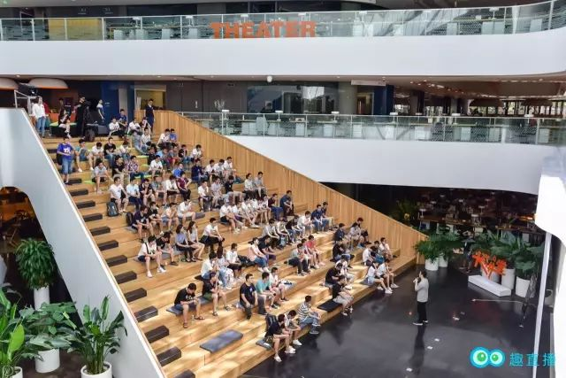
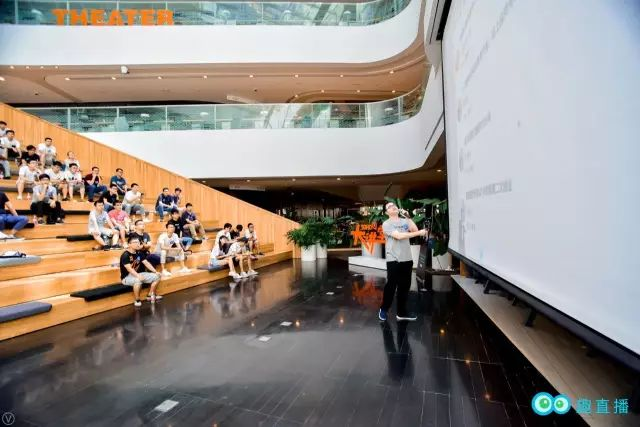
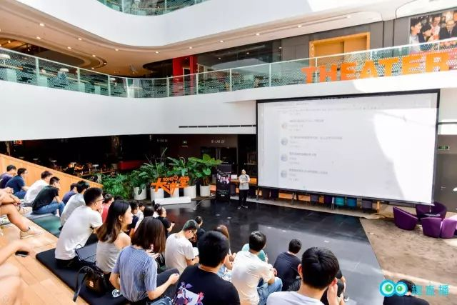
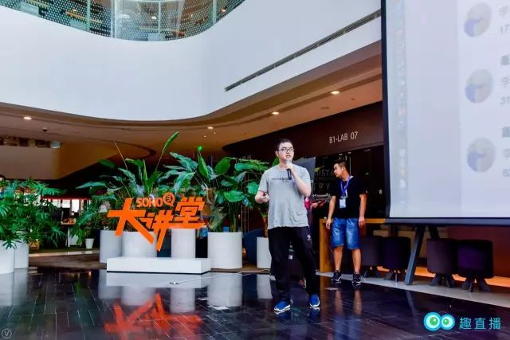
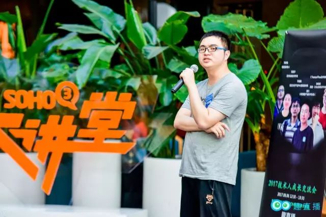

Compartiendo experiencias sobre el emprendimiento en Quzhibo (趣直播) | Original, traducido por IA

Hace poco, Quzhibo organizó un intercambio sobre el crecimiento profesional en el ámbito tecnológico, donde el CEO de Quzhibo, Li Zhiwei, compartió sus experiencias emprendedoras. A continuación, el video:
Aquí está la versión en texto:
¿Cómo creamos esta plataforma?
¿Qué quiere hacer Quzhibo?
Hoy quiero compartir con todos,
la historia pasada de Quzhibo.

Las presentaciones de los teléfonos Smartisan siempre son bastante grandiosas, ¿verdad?
En aquel entonces, siendo joven e inexperto, decidí construir mi propia plataforma de transmisión en vivo y la promocioné entre mis amigos en las redes sociales. Así fue como se lanzó por primera vez Quzhibo.
Hubo un pequeño incidente durante el lanzamiento. En ese momento, nuestro eslogan era “la primera plataforma de transmisión en vivo de conocimiento”, pero muchas personas, incluido el Dios de los Camarones, lo interpretaron como “la primera plataforma de transmisión en vivo de conocimiento sexual”.
Siempre he estado pensando, ¿qué debo hacer?
Si no tengo nada, ¿qué es lo más fácil de lograr con éxito?

He reflexionado durante mucho tiempo. Dado que conozco a grandes personalidades como Ye Gucheng y Tang Qiao, ¿podría crear una plataforma de transmisión en vivo para invitarlos a compartir sus conocimientos?
Primero, crear una plataforma que la gente use, esa fue mi idea inicial.
Entonces, decidí crear una plataforma de transmisión en vivo. La compilación del código tanto en el frontend como en el backend, así como la puesta en marcha del producto, fueron realizadas por mí solo. Muchos de los conocimientos sobre frontend y backend los adquirí durante las revisiones de código (codereview) y la colaboración con Gucheng, y resultaron ser muy útiles en este proyecto.
Si eres experto en muchas habilidades, entonces no tendrás restricciones al hacer algo.

Cuando la plataforma acababa de ser creada, no tenía popularidad ni streamers. Como muchos programadores, soy bastante independiente a la hora de hacer las cosas y siempre resuelvo los problemas por mí mismo. Si no había streamers, entonces yo mismo me convertía en uno.
Más tarde conocí a Yilong, quien también era mi excompañero de trabajo. Yilong llegó a la empresa después que yo, y yo solía ayudarlo con frecuencia, y a veces él también me ayudaba a mí. Poco a poco, nos convertimos en buenos amigos. A veces también me unía a las comidas de Yilong. A través de amigos talentosos como él, uniéndome a sus reuniones, pude conocer a más personas destacadas.

El tiempo de todos es limitado, así que es mejor invertirlo en estar rodeado de personas talentosas, ya que estas personas pueden ayudarme mucho más.
Más tarde, tuvimos la suerte de invitar a grandes expertos como Xianhua y Gucheng a hacer transmisiones en vivo en nuestra plataforma, y gradualmente la plataforma ganó algo de reputación. Te darás cuenta de que si te especializas en un área más específica, invitar a invitados también se vuelve más sencillo, y puedes atraer a grandes figuras de diferentes campos dentro del círculo tecnológico, como Chen Gang, Qin Chao y Miao Shen.
A lo largo de este camino de emprendimiento, lo que más he sentido es que no he sido lo suficientemente valiente al hacer las cosas.

Por ejemplo, Miao Shen y Qiao Ge, podrían haber sido invitados justo después de la transmisión en vivo de Yilong, ya que muchos de sus amigos ya habían transmitido en nuestra plataforma. Sin embargo, siempre he sentido que no he tenido la oportunidad de hablar con ellos, temiendo ser rechazado o simplemente ignorado. Este miedo me ha mantenido en una constante indecisión, evitando acercarme a ellos directamente y optando en su lugar por invitar a streamers con menos influencia que ellos.
En aquel entonces, la empresa en la que trabajaba estaba pasando por una etapa de pérdidas. Cuando regresé a casa para celebrar el Año Nuevo, los pocos cientos de yuanes que llevaba encima me los había dado mi padre. Mi hermana me reprochó diciendo: “Ya eres mayor, deberías dar sobres rojos a los mayores y a los más jóvenes. Pero estás fuera emprendiendo, sin un centavo, ni siquiera puedes permitirte dar sobres rojos”.
Fue el momento más triste y doloroso de mi vida. Las penas de un hombre crecen con este tipo de situaciones.
Después de regresar a Beijing, comencé a ser más valiente y a tomar la iniciativa de invitar a varias personalidades influentes (大 V) a hacer transmisiones en vivo en nuestra plataforma. Hay que entender que invitarlos a ser anfitriones no significa hablar mal de ellos, ni mucho menos difamarlos. Además, estas personalidades influentes suelen estar dispuestas a compartir, así que no hay necesidad de tener miedo. Simplemente hay que ser proactivo y comunicarse con ellos de manera positiva.
Efectivamente, fue gracias a este impulso que logramos invitar a Qiao Ge, Miao Shen y Sunny a realizar transmisiones en vivo en nuestra plataforma, y ese mismo mes la plataforma alcanzó la rentabilidad.
Solo cuando te encuentras realmente en una situación desesperada, es cuando luchas contra tus debilidades, contra esas debilidades humanas que llevas dentro.

Luego le recomendé al Sr. Ye un responsable técnico, una persona muy competente que le ayudó a resolver un gran problema. Al ver que nuestra plataforma era rentable y que la industria de pago por conocimiento tenía perspectivas, el Sr. Ye nos ofreció una inversión.
Así que primero tienes que lograr resultados por ti mismo. Cuando eres valioso para los demás, ellos invertirán en ti. Por ejemplo, si tu salario anual es de 2 millones, entonces conseguir una financiación de 2 millones también será relativamente fácil. Después de todo, tu capacidad está ahí.
Después de obtener financiación, el siguiente paso a seguir y cómo gestionar bien el equipo son los problemas que debo considerar y los desafíos que enfrentaré a continuación.
La historia anterior es la de Quzhibo, y también es mi experiencia como emprendedor.
¡Gracias a todos!